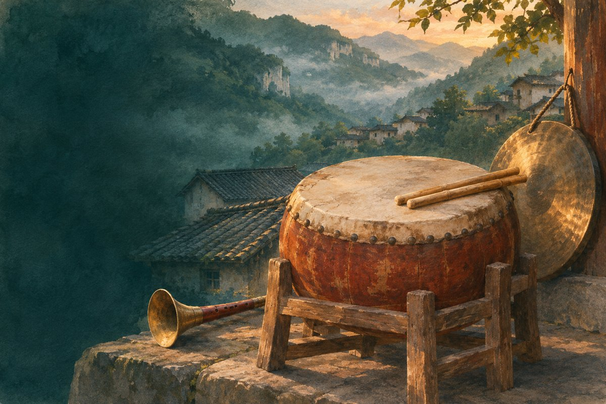

茅田文化
听鼓声，读往事，识乡情。
沿着三条线，认识茅田
选择一个主题，慢慢读。
山乡的日常，
也是文化的来处
鼓槌落下，老屋开门，书页翻过。茅田的文化，藏在艺人反复练习的本领里，藏在前辈留下的名字与文字里，也藏在乡亲递来的一杯茶里。
从一个故事开始，认识一位当地人，再去读这片山乡。
关于这个文化导览
图文按鼓文化、先贤文化、善文化分别整理。各篇保留报道出处与年代；实拍标明来源，AI 插画不作为人物肖像、文物或历史现场的凭证。

听鼓声，读往事，识乡情。
选择一个主题，慢慢读。
鼓槌落下，老屋开门，书页翻过。茅田的文化，藏在艺人反复练习的本领里，藏在前辈留下的名字与文字里，也藏在乡亲递来的一杯茶里。
从一个故事开始，认识一位当地人，再去读这片山乡。
图文按鼓文化、先贤文化、善文化分别整理。各篇保留报道出处与年代；实拍标明来源，AI 插画不作为人物肖像、文物或历史现场的凭证。